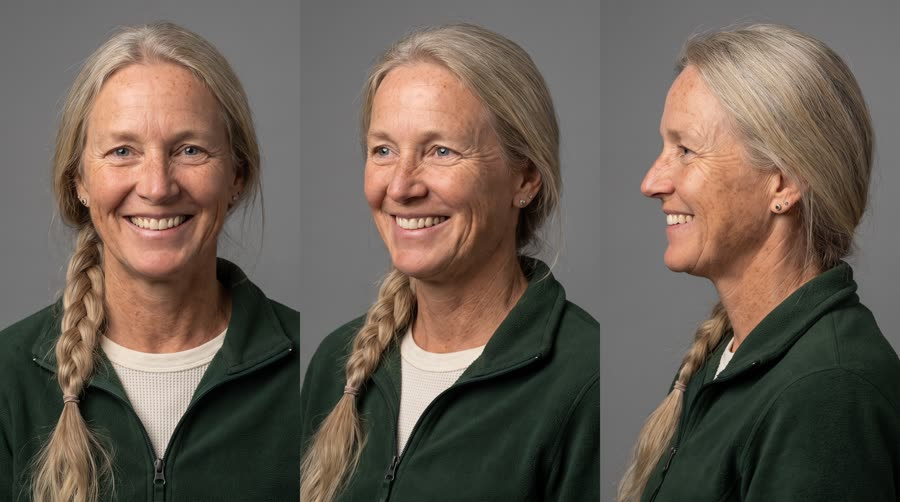
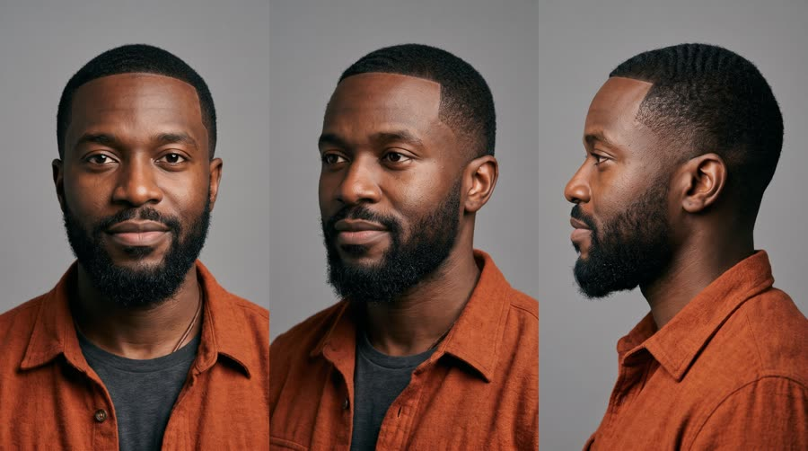
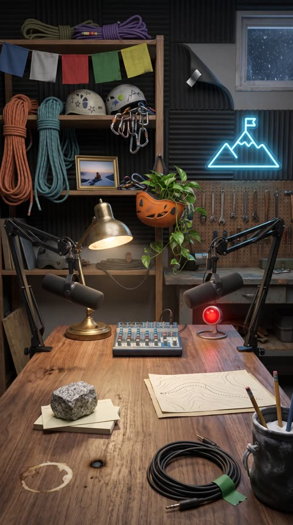
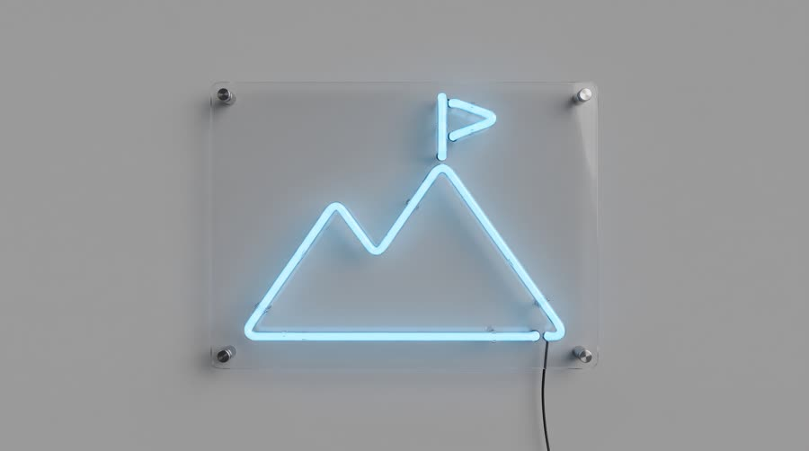
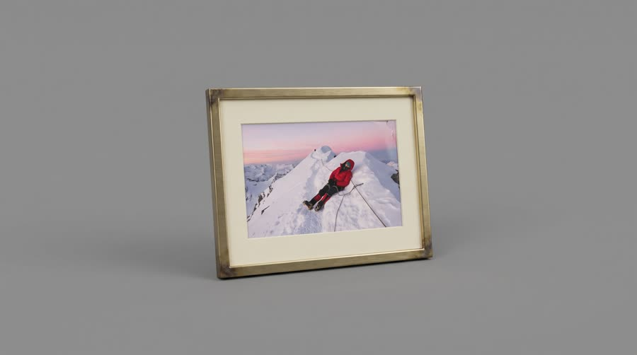
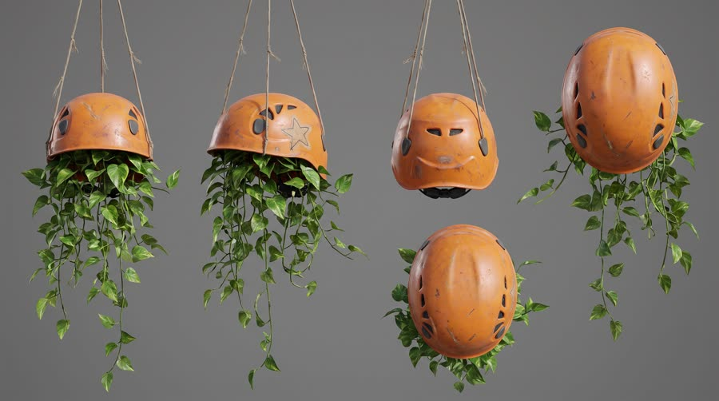

Send It Pod
Two climbing podcast hosts argue about the worst summit attempt of their lives (she fell asleep on the ridge, standing up). When she asks what's in his pack now, the answer on the desk is Red Bull Sugarfree, and it isn't for the mountain.
Borrowed trust and borrowed attention: viewers stop for a good story between two people who clearly like each other, and a product mentioned by a host reads as a recommendation, not an ad. The most-mentioned style in the social research (9x growth in podcast UGC briefs, 'S tier for anything that needs explaining'). It only works if the conversation would be worth watching with the product removed; the product has to arrive as a laugh or a reveal, never as a read-out.
Contact sheet
One keyframe per shot, with the caption as it will appear.


Cast and world

Voice: husky, big laugh, Colorado casual, tells stories with her hands

Voice: deep, dry, precise, deadpan timing, American

World. The fictional Send It Pod, a climbing and mountaineering video podcast recorded in a small converted garage studio in Boulder, Colorado. Walnut desk, two broadcast mics, acoustic foam, shelves of coiled ropes and helmets, a sky-blue neon mountain outline on the back wall. Palette. Warm walnut, cream and forest green, with the can's sky blue and silver as the neon accent and on the desk.
Fictional brands. Send It Pod (the podcast, name shown only in the post lower third); Kessik Peak (the fictional mountain in the story)
World bible
Fixed with the concept: the lore, the objects and the textures that make this world specific. Only product-adjacent props change per product.
- Send It Pod records every Tuesday night in Kofi's converted one-car garage in Boulder. Tonight is episode 148; his late dad's workbench is still under the shelves and the old oil stain is still under the rug.
- Brynn and Kofi were rope partners for nine seasons before she went full-time as an alpine guide (about 60 days a year on the ice) and he started drawing trail maps for a living.
- The story everyone asks for: Kessik Peak, 2016, 4:10am on the summit ridge, Brynn fell asleep standing up, clipped to an anchor, for eleven minutes. Kofi took a photo. It hangs in a thin brass frame on the back shelf.
- The chunk of grey granite on the desk came off Kessik's summit block that morning. They use it as a paperweight for the listener questions.
- Every rope on the shelf has a story and a strip of coloured tape on its end: orange for retired, green for still in service.
Wear and time. 9:40pm on a Tuesday in late January, 52 minutes into the recording, snow falling past the garage window. Brynn's tea has gone cold with a skin on it, the index cards are dog-eared and weighted with the granite, one foam panel has peeled at the corner, and a coil of rope has slumped off its shelf peg.
Signature objects



Set dressing by location
Foreground
a walnut desk with a pale coffee ring and a small old burn mark near the edge; a fist-sized chunk of grey speckled granite used as a paperweight on a few index cards; a coiled headphone cable held with a strip of green gaffer tape; a chalk bag with a chalk-dusted rim used as a pen pot, two pencils sticking out; a hand-drawn topo sketch on cream paper with pencil contour lines and a dotted route, no writing
Midground
two matte black broadcast mics on sprung boom arms clamped to the desk edge; a small audio mixer with rows of sky-blue and grey knobs and no labels; a brass desk lamp with a slightly dented shade throwing a warm pool of light; a dented orange climbing helmet hung upside down as a planter, trailing pothos over its rim; a small round red glass lamp on a short stand, glowing, with nothing written on or near it
Background
dark grey acoustic foam panels, one corner peeling and held up with silver tape; wooden shelves of coiled climbing ropes in faded orange, teal and purple, each end whipped with coloured tape; scuffed helmets with drawn star and mountain stickers (shapes only) and a sling of carabiners; the thin brass-framed photo of a tiny climber asleep on a snowy ridge at dawn; a string of faded plain coloured cloth flags in blue, white, red, green and yellow along the top shelf; a pegboard of old hand tools above a worn workbench; the sky-blue neon mountain outline with a small flag on its summit; a small garage window with snow falling in the dark outside
- Brynn: a forest green fleece with a darker patched elbow from a rock scrape; white athletic tape wrapped around her right index finger, grey at the edges; a cream ceramic mug with a chipped rim and a hand-painted pine tree; a small orange guide's whistle on a cord around her neck; chalk-dry knuckles and a faded tan line from glacier glasses
- Kofi: a thin leather cord bracelet worn smooth and dark; a mechanical pencil tucked behind his ear; a matte black pocket notebook held shut with a rubber band; rust flannel sleeves rolled with a frayed left cuff
- Send It Pod: a simple two-peak mountain outline with a small flag on the summit, sky blue and forest green. On: the neon on the back wall, the lower third and end card. Text in post: show name and episode number in the lower third
- Kessik Peak: a sharp knife-edge double summit silhouette, snow white and dawn pink. On: the framed photo on the back shelf, the topo sketch on the desk. Text in post: none
the spring creak of a boom arm as someone leans in; carabiners clinking on the shelf when Brynn slaps the desk; the faint electric buzz of the neon; an office chair's gas lift sighing; a close crisp can crack right on the mic; snow ticking against the small garage window; laughter blowing into the pop filter
Beats
| Time | Beat | What happens |
|---|---|---|
| 0-2.6 | hook | Cold open mid-story: Brynn confesses she fell asleep on a summit ridge, standing up. |
| 2.6-11.2 | banter | Kofi was roped to her. She protests: hour fourteen! He reminds her she packed four candy bars. She fires back: so what's in your pack, genius? |
| 11.2-16.2 | product | Kofi sets a can on the desk, cracks it into the mic, and names it with the allowed claim. |
| 16.2-21 | punchline | She assumes it's for climbing. It isn't: he needs it here, because she talks for three hours. |
| 21-24.8 | payoff | Brynn collapses laughing into her mic. That's fair. |
| 24.8-30 | cta | Wide two-shot, can between the mics; Brynn does a deadpan host-read of the tagline. |
Screenplay
62 spoken words in 30 s. Each line keeps its intent (fixed in the template) and its wording (written for this product).
| Time | Speaker | Line | Intent (template) |
|---|---|---|---|
| 0.3-2.5 | Brynn | I fell asleep on a summit ridge. Standing up. half proud, half ashamed, hands up, leaning into the mic | Hook: cold-open on the most outrageous sentence of a genuinely interesting story. |
| 2.8-3.8 | Kofi | Roped to me! deadpan outrage, pointing across the desk | The co-host raises the stakes of the story. |
| 4.8-6.6 | Brynn | It was hour fourteen, Kofi! laughing, slapping the desk | The storyteller defends herself with the detail that makes the problem relatable. |
| 7.4-8.8 | Kofi | You packed four candy bars. dry, slow, counting on his fingers | Callback that sets up the product as the better choice, without naming a rival. |
| 9.4-10.9 | Brynn | So what's in your pack, genius? arms folded, eyebrows up, a grin | The challenge that invites the product in. |
| 13.4-16.0 | Kofi | Red Bull Sugarfree. Keeps me alert, no sugar. calm, pleased with himself, after the crack · Say: RED BULL SHUG-er-free, three clear words | Product line: name the product and the one benefit, with an allowed claim only. |
| 16.6-18.0 | Brynn | You bring that up a mountain? teasing, pointing at the can | Set-up for the twist: the obvious assumption about when it's used. |
| 18.2-20.8 | Kofi | No. I bring it here. You talk for three hours. bone dry, a tiny pause before 'here', not looking at her | Punchline: the real use moment is right here, at the co-host's expense. |
| 21.6-22.4 | Brynn | That's fair. wheezing with laughter, forehead nearly on the desk | Payoff: the target concedes, laughing. |
| 26.4-29.4 | Brynn | Wiiings without sugar. There, I read the ad. sits up, fake-announcer voice for the tagline, then normal and deadpan for the rest · Say: WINGS, stretch the vowel slightly | Tagline as a knowing host-read, then out. |
Generation plan
U1 · 0 to 11.2 s · 12 s generation
Shots S01, S02, S03, S04, S05 · References: brynn card, kofi card, pod plate, S01 keyframe as first frame
9:16 video podcast clip in a small cosy studio: walnut desk, two large matte black broadcast mics on boom arms with no logos, headphones, rope shelves, a sky-blue neon mountain outline with no letters, soft key light, warm lamp. Three locked cameras, cutting on each speaker. Shot 1 (0 to 2.7 s): off-axis single of @Image1 (Brynn), hands up, half proud: "I fell asleep on a summit ridge. Standing up." Shot 2 (2.7 to 4.4 s): off-axis single of @Image2 (Kofi), pointing across the desk, deadpan outrage: "Roped to me!" Shot 3 (4.4 to 7 s): Brynn slaps the desk laughing: "It was hour fourteen, Kofi!" Shot 4 (7 to 9.2 s): wide two-shot, Kofi counts on his fingers, dry and slow: "You packed four candy bars." Brynn covers her face. Shot 5 (9.2 to 12 s): Brynn folds her arms, eyebrows up: "So what's in your pack, genius?" Each host looks past the lens at the other. No can or bottle visible yet. Native sound: close warm broadcast-mic voices, room tone, chair creaks, a desk slap, overlapping laughter. No music. No text on screen, no logos.
U2 · 11.2 to 16.2 s · 5 s generation · exact-risk (short, cheap to re-roll)
Shots S06, S07 · References: product can official, kofi card, S06 keyframe as first frame
9:16 video podcast. Shot 1 (0 to 2 s): locked macro insert, a man's hand with a leather cord bracelet sets the exact can from @Image1 upright on the walnut desk in front of a black broadcast mic, label to camera, and cracks the tab; the crack and fizz are loud and close in the mic. Shot 2 (2 to 5 s): off-axis single of @Image2 (Kofi), headphones on, lifting the open can to chest height beside his mic with the label readable, calm and pleased, looking past camera at his co-host: "Red Bull Sugarfree (said RED BULL SHUG-er-free, three clear words). Keeps me alert, no sugar." Keep the can's shape, colours, wordmark and bulls exactly as @Image1. Exactly one can. Native sound: can crack, fizz, close voice, room tone. No music.
U3 · 16.2 to 24.8 s · 9 s generation
Shots S08, S09 · References: brynn card, kofi card, pod plate, S08 keyframe as first frame
9:16 video podcast, same studio and light. Shot 1 (0 to 4.8 s): medium two-shot across the desk, an open sky-blue and silver can stands in front of @Image2 (Kofi). @Image1 (Brynn) points at it, teasing: "You bring that up a mountain?" Kofi, bone dry, looking at his mic, not at her, a tiny pause: "No. I bring it here. You talk for three hours." Her face drops, then cracks. Shot 2 (4.8 to 8.6 s): off-axis single of Brynn doubled over laughing, forehead toward the desk, one hand up: "That's fair." Kofi's low chuckle off mic. The can does not move. Native sound: voices, overlapping genuine laughter, room tone. No music. No logos, no readable text.
U4 · 24.8 to 30 s · 6 s generation · exact-risk (short, cheap to re-roll)
Shots S10 · References: product can official, brynn card, kofi card, S10 keyframe as first frame
9:16 video podcast, locked wide two-shot of the studio. The exact can from @Image1 stands upright on the walnut desk between the two black broadcast mics, label to camera, unchanged. @Image2 (Brynn) sits up and looks straight into the lens with a fake-announcer voice: "Wiiings (said WINGS, vowel stretched) without sugar." Then normal and deadpan: "There, I read the ad." @Image3 (Kofi) grins, picks up the can and raises it in a small toast, label still to camera. Native sound: voices, a laugh, room tone. No music, no text.
Sound, music, voice, captions
| 0 to 24.8 s | conversation | No score: a real podcast clip has none, the voices and laughter carry it. |
| 28.6 to 30 s | end stinger | A 1.5 second podcast stinger: a warm acoustic guitar strum and a snare hit, as if it's the show's own outro. |
Added sound
- 12.4 s: can crack and fizz, close-miked and slightly too loud (the product moment and a podcast in-joke; must register clearly)
- Brynn: native voice in U1; her U1 vocal stem as voice reference for U3 and U4
- Kofi: native voice in U1; his U1 stem as voice reference for U2 and U3
font: Inter ExtraBold, size: 5.4% of frame height, color: #FFFFFF, active word: #7FD1FF sky blue on the word being spoken, shadow: soft black drop shadow 0 3px 10px rgba(0,0,0,.7), box: False, position: centre, 70% down the frame, above the platform UI safe zone and below the hosts' mouths, max words on screen: 4, speaker colour: each host's words take a subtle tint on their first line (Brynn warm white, Kofi cool white) so viewers can follow overlapping speech, lower third: show name and episode lower third on the first wide shot, rendered in post, waveform: small animated audio waveform bar under the captions, rendered in post
Post text- 7.0 to 11.2 s: SEND IT POD / Ep. 112: Worst summit ever (podcast lower third bottom left on the wide shot: white Inter ExtraBold on a dark translucent bar with a small sky-blue mountain glyph, slides in from the left)
- 0 to 30 s: (audio waveform) / (small animated sky-blue waveform bar under the captions, reacting to the voices, rendered in code)
- 27.0 to 30 s: Red Bull Sugarfree / Wiiings without sugar (Inter ExtraBold white, centred in the clean lower area above the platform UI, fades up 6 frames under the host-read)
Adaptation contract
How this same concept takes any physical product.
| Product type | Where it sits in the story | Scale |
|---|---|---|
| ingested | he sets the can on the desk, cracks it right into the mic and drinks, the punchline | hand |
| applied | he pulls it from the desk drawer and applies it on air (lip balm, sunscreen, hand cream), the punchline | hand |
| worn | he's wearing it the whole episode and finally points to it (glasses, a jacket, a watch, socks), the punchline | body |
| handheld | he picks it up off the desk and holds it to the mic (a bottle, earbuds, a headlamp, a tool), the punchline | hand |
| carried | he lifts it onto the desk and unzips it (a pack, a case, an organiser), the punchline | hand to lap |
| home | it's part of the studio set and the camera finds it (a chair, a lamp, a blanket, a speaker), the punchline | room |
| consumable | he tears open the pack on the desk and hands her one (a bar, a sachet, a refill), the punchline | hand |
Style bible
Look. The three-camera podcast rig: a wide two-shot across the desk, and two singles shot slightly off-axis from the side so each host looks past the lens to the other. Big dynamic broadcast mics on boom arms with foam or no windscreen, over-ear headphones, mugs and props on the desk. A lived-in set behind: shelf of hobby gear, plants, a warm practical lamp and one coloured neon shape. Cutaways to reactions and one insert of the object being talked about. Framing is static per camera; energy comes from cutting between cameras on the laugh.
Camera. Three locked cameras on 35mm (wide) and 50 to 85mm (singles), the singles at 30 degrees off the speaker's eyeline, eye level. Occasional slow digital punch-in (10%) on the best line, the way podcast editors do. One locked macro insert on the product, never handheld.
Light and texture. Soft key from a big diffused source on the camera-far side of each host, warm practicals in the background (a lamp, string lights), a coloured neon accent rim, slightly dark set so the faces pop. Looks like a well-lit creator studio, not a TV studio. Clean mirrorless video, 4K sharpness, shallow depth of field on singles with creamy background bokeh, a slight warm grade, no grain, no letterbox. Real skin, real stubble, headphone marks in the hair.
Pacing. Cold-open mid-story: the first line is the most outrageous sentence of the story, no intro. Cut camera on every speaker change or laugh, roughly every 2 seconds, overlapping speech allowed. The product insert is the held beat (at least 1.5 s). The punchline lands on a two-shot so both reactions are visible. End on a laugh and a one-line host-read, then cut hard.
Sound. Close, warm broadcast-mic voices with room tone, headphone bleed, chair creaks and a mug on the desk. The can crack is recorded close to the mic (it should sound almost too loud, a podcast in-joke). Laughter is real and overlapping. No score under the conversation; a short podcast stinger on the end card, added in post.
Known failures.
- microphones come out as real brand models with visible logos: say plain matte black broadcast mic with no logo
- the neon sign turns into readable words: ask for an abstract neon line drawing of a mountain outline, no letters
- singles look straight into the lens like a presenter: say 'looking past camera at the co-host off frame left or right'
- both hosts get cans or the mug becomes a second can: say the woman drinks from a plain cream ceramic mug and only the man has the can
- headphones float or merge into hair: say headphones resting on the ears with the band over the head
- the set reads as a news desk or TV studio: say small cosy creator studio, walnut desk, acoustic foam panels, plants
- climbing gear on the shelves picks up brand prints: say plain coloured ropes and unbranded helmets
- dense desk dressing brings back real-brand habits: a closed laptop gets a fruit logo on its lid; describe it as a dark grey laptop with a completely plain matte lid
- a richly dressed studio plate pulls every single back to the plate's wide desk framing with the same foreground cable, rock and ring: for singles and inserts say the camera is close, the desk is a thin strip at the bottom edge, and do not copy the reference's framing
- a clean band for captions is drawn as a literal white rectangle: ask for a plain uncluttered lower third with nothing drawn there
- asking for a red recording light makes the model add a readable on-air sign: describe a small round red glass lamp with nothing written on or near it, or leave it out of close singles
Claims and cost
Claims used (all from the product page): Caffeine helps to improve concentration and increase alertness; Same benefits of the original Energy Drink, without sugar (tagline form)
Video estimate: 32 s of generation at $0.27/s = $8.64 first pass, $20 to 30 with retakes, plus about $1.0 music.